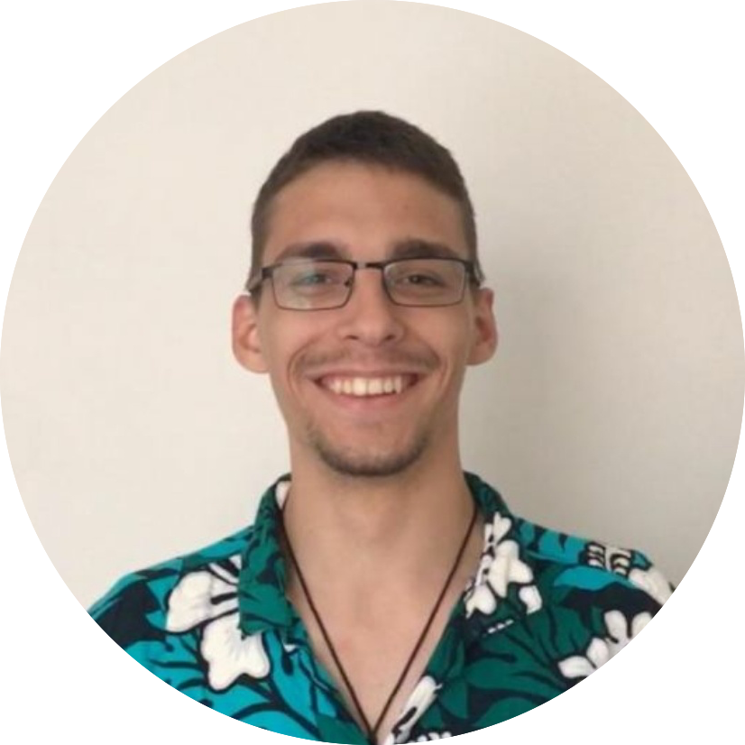

Hi, I'm Angelo and I'm a
UX Designer in progress
With a background in sales, I decided to move from Bucharest, Romania to the Netherdands to kick-start my carreer in the UX Industry. I am currently following the Communication and Multimedia Design(CMD) course at The Hague Univeristy of Applied Sciences where I've been part of numerous projects which involved researching, testing, ideating and not only. You can read more about them here.
My goal is to succesfully use elements that surround me in my everyday life as a source of inspiration to my design and as an answer to my users' pains or desires.
To tell you a bit more about myself, I'll be turning 22 this year and that still surprises me, I have had a life-long passion for cars or pretty much anything that relates to them, I am really excited about making things myself, either physical or virtual, and consider it as being some sort of therapy (yup, lego therapy to fight off stress).
Some of the virutes I live by are
Life is no more than a game - Have fun, stop taking it so seriously, always try new stuff, but mind the other players at all times.
Stay humble - No matter how good your skills are, never brag about it. Actually, never brag about anything, that's not cool. And besides, there's probably an asian person that can do it better.